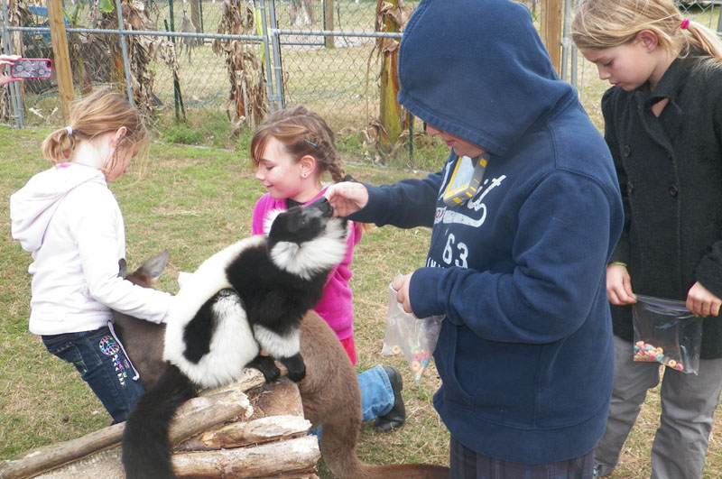

Questions?
407-383-6766
About the Exotic Experience

Come enjoy the company of lemurs, kangaroos, deer, a kinkajou and more! This is an individually-scheduled, personal, hands-on encounter with animals you normally only get to view through bars and cages. The animals are tame and love human interaction.
We also host birthday parties, events, field trips and, on occasion, do off-property appearances, depending on who is available to travel. Learn about our endangered species and what we can do to help with conservation!
Exotic Experience has been featured on MSN, Animal Planet, Inside Edition, Good Morning America, Right This Minute and Red Eye!